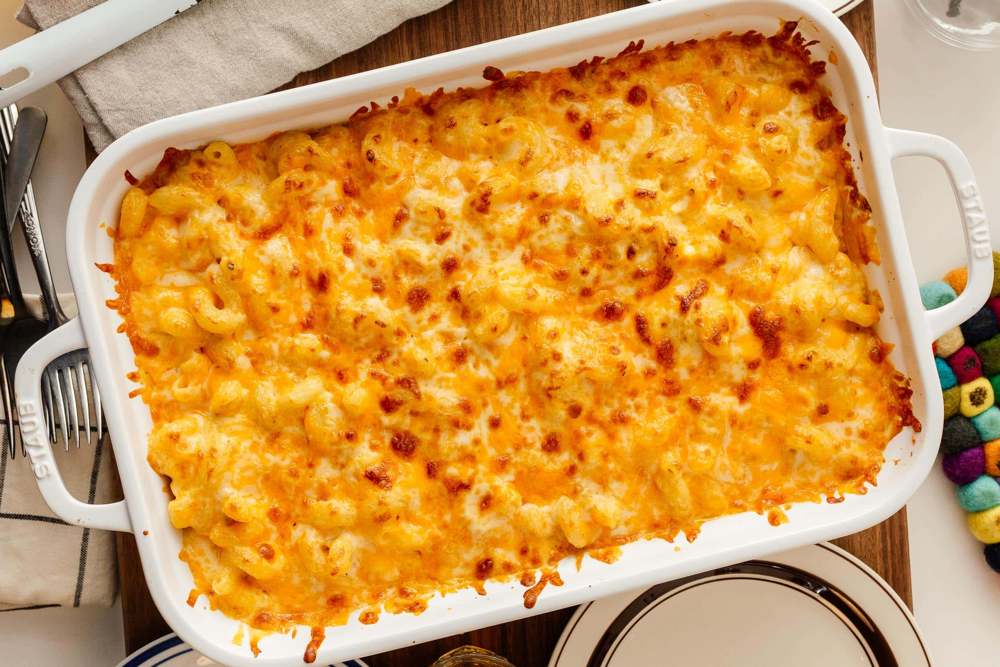

Mac and Cheese

Creamy, cheesy stovetop mac and cheese made from scratch.
Ingredients
- Elbow macaroni
- Butter
- Flour
- Milk
- Cheddar cheese, shredded
- Salt and pepper
Steps
- Boil macaroni according to package instructions, then drain.
- Melt butter in a pot over medium heat.
- Whisk in flour and cook for 1 minute to form a roux.
- Slowly whisk in milk until smooth, then simmer until thickened.
- Stir in shredded cheese until melted and smooth.
- Season with salt and pepper.
- Add macaroni to the cheese sauce and stir to coat.
- Serve warm and enjoy!